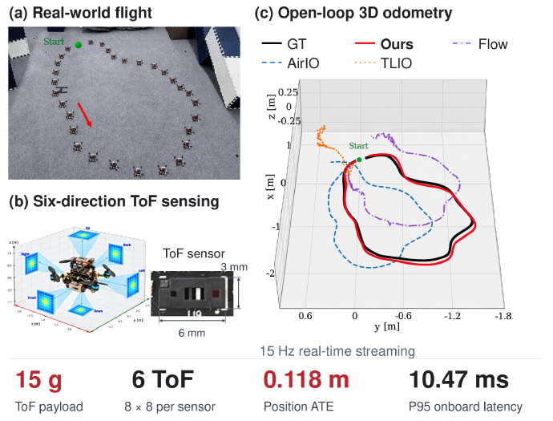

STATE ESTIMATIONTIO-Former: Ultra-Lightweight 6-Directional ToF-Inertial Odometry for Nano-UAVs via a Streaming Causal Transformer
Streaming range–inertial odometry for nano-UAVs, combining sparse ToF measurements and IMU data with bounded inference cost and memory.
54.4% lower position error vs. optical-flow baseline · 10.466 ms P95 latency